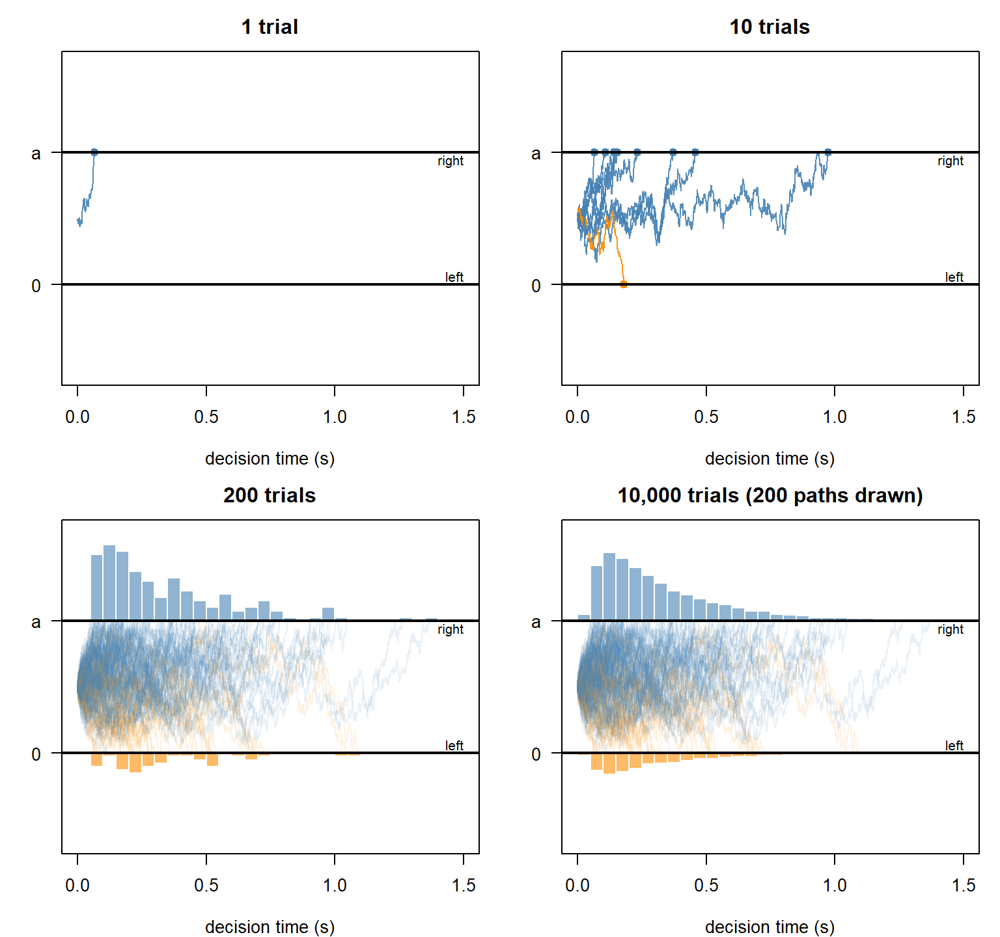
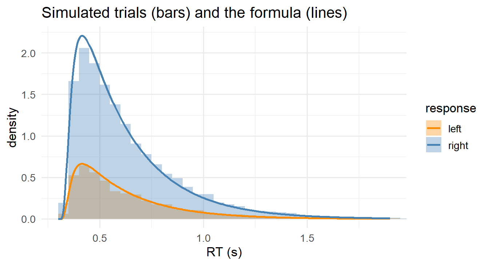

4 From Paths To Distributions
Fitting the model requires, for each trial, the probability density of the observed response at the observed time, given the parameters. This is the first-passage time density: the density of the time at which \(X\) first reaches a particular boundary. This chapter builds it up the long way first, from simulated paths, and then gives the formula that calculates it directly.
4.1 From Single Paths To RT Distributions
Each simulated trial gives one path, and one path gives one result: which boundary it reached and when. Repeating the simulation many times with the same parameters gives many results, and their spread is the model's prediction for choices and RTs.
simulate_paths() (in R/ddm_functions.R) runs many trials at once with the same step
equation as Chapter 2, and keeps the first 200 paths for plotting.
set.seed(1)
paths_sim <- simulate_paths(n = 10000, v = 1, a = 1.2, z = 0.5)
Paths that reach the upper boundary ("right") are blue, and paths that reach the lower boundary ("left") are orange.
- With one trial there is one result: which boundary was reached, and when.
- With 10 trials, most end at the upper boundary because the drift is positive, a few end at the lower boundary, and the times vary.
- With 200 trials, the ending times are collected into histograms, drawn above the upper boundary and below the lower one. They start to form two distributions: a larger one for "right" and a smaller one for "left". Both rise quickly and then have a long right tail.
- With 10,000 trials, the histograms are smooth. The area of the upper histogram is the proportion of trials ending at the upper boundary (0.77 here), and the area of the lower one is the rest.
As more trials are simulated, the histograms settle on two fixed curves, one for each boundary. Those curves are the first-passage time densities. The formula below calculates them exactly, without simulating any paths.
4.2 The Formula
For the lower boundary, with \(\sigma = 1\) and decision time \(t = \text{RT} - T_{er}\):
\[ f_{\text{lower}}(t \mid v, a, z) = \frac{1}{a^2}\, \exp\!\left(-v a z - \frac{v^2 t}{2}\right)\, g\!\left(\frac{t}{a^2} \,\middle|\, z\right) \]
The \(1/a^2\) factor and the \(t/a^2\) argument rescale time to a process with a boundary at 1, the exponential term adjusts for the drift, and \(g(u \mid z)\) is the density for a process with no drift and a boundary at 1. \(g\) has no closed form. Navarro & Fuss (2009) give two series for it:
\[ g_{\text{small}}(u \mid z) = \frac{1}{\sqrt{2\pi u^3}} \sum_{k=-\infty}^{\infty} (z + 2k)\, \exp\!\left(-\frac{(z+2k)^2}{2u}\right) \]
\[ g_{\text{large}}(u \mid z) = \pi \sum_{k=1}^{\infty} k\, \exp\!\left(-\frac{k^2 \pi^2 u}{2}\right) \sin(k \pi z) \]
The first series converges quickly for small \(u\) and the second for large \(u\), so the code uses the first when \(u < 1\) and the second otherwise. Ten terms of each are enough. Appendix A explains where the two series come from.
The upper boundary follows by symmetry. Reaching \(a\) from \(z a\) with drift \(v\) is the same as reaching 0 from \((1-z) a\) with drift \(-v\), so
\[ f_{\text{upper}}(t \mid v, a, z) = f_{\text{lower}}(t \mid -v, a, 1 - z). \]
4.3 The Code
# Density g(u | z) for a process with no drift and a boundary at 1.
g_std <- function(u, z, K = 10) {
out <- numeric(length(u)) # density is effectively 0 for u near 0
small <- u < 1 & u > 1e-8
if (any(small)) { # small-time series, k = -K..K
zz <- outer(z[small], 2 * (-K:K), "+")
out[small] <- rowSums(zz * exp(-zz^2 / (2 * u[small]))) / sqrt(2 * pi * u[small]^3)
}
large <- u >= 1
if (any(large)) { # large-time series, k = 1..K
k <- 1:K
terms <- exp(-outer(u[large], k^2) * pi^2 / 2) * sin(outer(z[large], k) * pi)
out[large] <- pi * as.vector(terms %*% k)
}
out
}
# Density of each trial's response and RT. Every parameter can be given as one
# value per trial, which is what trial-level models need (Part 2).
ddm_density <- function(rt, upper, v, a, z, t0) {
n <- length(rt)
upper <- rep_len(upper, n); v <- rep_len(v, n); a <- rep_len(a, n)
z <- rep_len(z, n); t0 <- rep_len(t0, n)
t <- rt - t0
dens <- numeric(n)
ok <- t > 0 # no response is possible before t0
vv <- ifelse(upper, -v, v) # upper boundary: reverse the drift
zz <- ifelse(upper, 1 - z, z) # and mirror the starting point
dens[ok] <- exp(-vv[ok] * a[ok] * zz[ok] - vv[ok]^2 * t[ok] / 2) / a[ok]^2 *
g_std(t[ok] / a[ok]^2, zz[ok])
dens
}4.4 Check 1: The Formula Matches The Simulated Paths
The curves from ddm_density() should match the histograms of the 10,000 simulated
trials. Here non-decision time is set to 0.3 s, so the simulated decision times are
shifted by 0.3 s to give RTs.
t0_demo <- 0.3
bw <- 0.05
simulated <- tibble(rt = paths_sim$dtime + t0_demo,
response = if_else(paths_sim$upper, "right", "left"))
formula_curves <- expand_grid(rt = seq(0.301, 1.9, length.out = 300),
response = c("right", "left")) |>
mutate(density = ddm_density(rt, response == "right", v = 1, a = 1.2, z = 0.5, t0 = t0_demo))
ggplot(simulated, aes(x = rt, fill = response)) +
# bar heights: share of ALL simulated trials per second, so the two
# histograms together have an area of 1, like the two density curves
geom_histogram(aes(y = after_stat(count) / (nrow(simulated) * bw)),
binwidth = bw, boundary = t0_demo, position = "identity", alpha = 0.35) +
geom_line(data = formula_curves, aes(y = density, colour = response), linewidth = 1) +
scale_fill_manual(values = c(right = "steelblue", left = "darkorange")) +
scale_colour_manual(values = c(right = "steelblue", left = "darkorange")) +
coord_cartesian(xlim = c(0.3, 1.9)) +
labs(x = "RT (s)", y = "density", fill = "response", colour = "response",
title = "Simulated trials (bars) and the formula (lines)")
The bars are the histograms from the start of the chapter, now on the same axis, and the lines are the formula. They agree, apart from simulation noise and the small delay caused by the 1 ms time steps. The formula gives the limit the histograms approach, so fitting never needs to simulate paths.
4.5 Check 2: The Density Integrates To The Choice Probability
Integrating the upper-boundary density over all times should give \(P(\text{upper})\) from Chapter 3, and the two boundaries together should give 1.
up <- integrate(function(t) ddm_density(t, TRUE, 1, 1.2, 0.5, 0), 0, Inf)$value
lo <- integrate(function(t) ddm_density(t, FALSE, 1, 1.2, 0.5, 0), 0, Inf)$value
c(integral_upper = up, formula_upper = p_upper(1, 1.2, 0.5), total = up + lo)## integral_upper formula_upper total
## 0.769 0.769 1.000Each curve integrates to the probability of that response rather than to 1. Their shapes describe the RT distributions and their areas describe the choice proportions.
4.6 Check 3 (Optional): Agreement With A Published Package
If the rtdists package is installed (Getting Started), our density can be compared with
its ddiffusion() over a grid of parameter values. Note that rtdists gives the
starting point on the absolute scale, \(z a\).
expand_grid(rt = c(0.35, 0.4, 0.6, 0.9, 1.6, 3), v = c(-2, 0, 1.5),
a = c(0.8, 1.5, 2.5), z = c(0.3, 0.5, 0.7), upper = c(TRUE, FALSE)) |>
mutate(ours = ddm_density(rt, upper, v, a, z, t0 = 0.3),
rtdists = rtdists::ddiffusion(rt, if_else(upper, "upper", "lower"),
a = a, v = v, t0 = 0.3, z = z * a)) |>
summarise(largest_absolute_difference = max(abs(ours - rtdists)))| largest_absolute_difference |
|---|
| 0 |